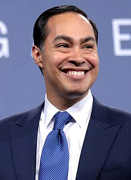
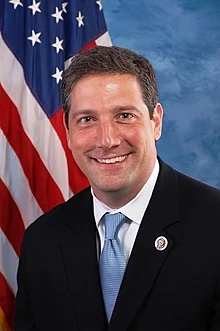

Democratic Candidates
Click on each candidates' picture to be redirected to their website!
Michael Bennet
U.S. Senator, Colorado
Age: 54
Experience:
Bennet is a current senator from Colorado dedicated to
drastically improving the education system in the U.S..

Joe Biden
Former Vice President
Age: 76
Experience:
Vice President Biden has had much experience in washington
serving as both senator and then VP. He is a
moderate democrat who disagrees on some issues with the
other democratic candidates.

Cory Booker
U.S. Senator, New Jersey
Age: 50
Experience:
Cory Booker was the Mayor of Newark who strongly disagrees with Trump’s policies. Booker supports a $15 minimum wage, DACA and changing the existing immigration policy, and advocates for criminal justice reform.
Steve Bullock
Governor of Montana
Age: 53
Experience:
Steve Bullock is the current Governor of Montana who is not in support of Medicare for all or universal healthcare, but he is in support of expanding coverage. Bullock also believes that the legalization of Cannabis should be up to the states and there should be universal background checks in place in an effort for gun control.

Pete Buttigieg
Mayor of South Bend, Indiana
Age: 37
Experience:
Buttigieg is a veteran of the Afghanistan war who believes in repealing the statue of illegal entry and supports DACA. He is also a supporter of the Green New Deal and canceling some student debt.

United States Secretary of Housing and Urban Development (2014–2017)
Mayor of San Antonio (2009–2014)
Julian Castro
Former Secretary of Housing and Urban Development
Age: 44
Experience:
As former HUD secretary, Castro believes in raising the minimum wage to $15 and making college free. He also wants to make universal free school lunch and to cancel some student debt.
Bill de Blasio
Mayor of New York City
Age: 58
Experience:
De Blasio is the current mayor of New York City and advocate for progressive causes. He is a supporter of the Green New Deal and strongly believes in Medicare for all.

John Delaney
U.S. Representative, Maryland
Age: 56
Experience:
Delaney chose not to run again for U.S. representative in 2018 to focus on his presidential run. He does not believe that the Electoral College should be eliminated, and he does not support universal healthcare.

Tulsi Gabbard
U.S. Representative, Hawaiiy
Age: 38
Experience:
Tulsi Gabbard enlisted in the Hawaii National Guard shortly after 9/11 and served in a 12 month tour in Iraq. Gabbard stands for criminal justice reform including abolishing the death penalty and mandatory minimal sentences. She also is in support of The Green New Deal and ending fracking and slashing the current defense fund.

Kirsten Gillibrand
U.S. Senator, New York
Age: 52
Experience:
Gillibrand won a Republican district of New York, and she won reelection in 2008. She is a strong supporter of women’s and LGBT rights and universal healthcare.

Kamala Harris
U.S. Senator, California
Age: 54
Experience:
Harris is a former prosecutor from California who is currently serving as Senator. She is a vocal supporter of abortion rights and a supporter and leader of civil rights.

John Hickenlooper
Former Governor of Colorado
Age: 67
Experience:
Hickenlooper is an American politician, former geologist, and businessman from Colorado serving as both Mayor and Governor. As president, he wants to bring similar policy into the White House that he passed as Governor including gun reform and legalizing cannabis.

Jay Inslee
Governor of Washington
Age: 68
Experience:
Climate change is the biggest issue for Jay Inslee. As governor, he has strongly focused on climate and environmental policy and hopes to bring the same into the presidency.

Amy Klobuchar
U.S. Senator, Minnesota
Age: 59
Experience:
Klobuchar is in support of policy that is in line with modern American Liberalism along with having similar positions on issues with the other candidates. She is pro-choice and supports LGBT rights as well as wanting universal healthcare.

Wayne Messam
Mayor of Miramar, Florida
Age: 45
Did not qualify for July debate

Beto O'Rourke
Former U.S. Representative, Texas
Age: 46
Experience:
A three-term congressman who gained attention and popularity during his run in an attempt to replace Texas senate incumbent, Ted Cruz.

Representative from Ohio since 2003
Member of the Ohio Senate (2001-2002)
Tim Ryan
U.S. Representative, Ohio
Age: 46
Experience:
Ryan has similar views to many other candidates including legalizing canabis, college should be free, supports a voluntary buyback program regarding assault weapons and keeping abortion legal.

Bernie Sanders
U.S. Senator, Vermont
Age: 77
Experience:
After losing the democratic nomination in 2016 to Hillary Clinton, Sanders is running again on a nearly identical platform for 2020. He greatly focuses on issues such as Healthcare and college for all.

Joe Sestak
Former U.S. Representative, Pennsylvania
Age: 67
Did not qualify for July debate

Elizabeth Warren
U.S. Senator, Massachusetts
Age: 70
Experience:
Warren is calling for major governmental changes and is fighting for working class families, union members, women, and new immigrants.

Marianne Williamson
Self-help author
Age: 67
Williamson is a self-help author and motivational speaker with no previous political experience.

Andrew Yang
U.S. Senator, Massachusetts
Age: 44
Yang is a successful entrepreneur, attorney, and philanthropist who has no previous political experience. He founded “Venture for America”, a nonprofit that trains recent graduates and young professionals to work for startups in emerging cities.